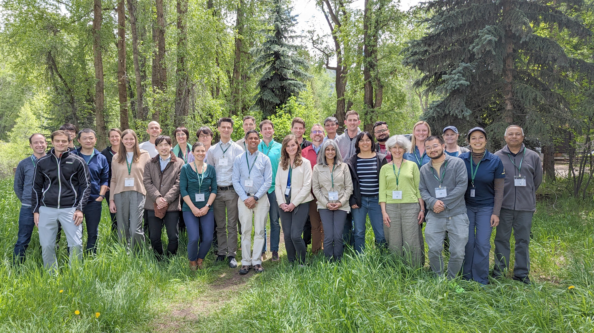

Priorities for Data, Modeling, and Cross-disciplinary Research
Irrigation is a critical component of land and water resource management, and facilitates nearly 40% of the world’s food supply. While irrigated areas occupy a relatively small global extent, the volume of water used for irrigation nevertheless accounts for the lion’s share of global freshwater withdrawals: ~70% of total withdrawals and 84-90% of consumptive use. Furthermore, irrigation may now also constitute a complex driver of environmental change, including groundwater depletion, enhanced soil salinity, and nutrient leaching in agricultural systems. Copiously applied irrigation water also impacts regional hydroclimates, heat extremes in both agricultural and urban areas, and biogeochemical cycling. Demand for irrigation water, both in agriculture and other sectors, is expected to increase into the 21st century. Such increases, particularly when coupled with climate change-induced water disruptions, tax existing irrigation water supplies and may drive some regions into water scarcity. It is therefore crucial to better understand irrigation impacts and interactions across natural and human systems to aid in improving projections of regional environmental/climate change and sustainable water resource management.
This website is host to the community of researchers studying the role of irrigation in the Earth system. This community is interdisciplinary - hailing from both the natural and social sciences - and comprises research spanning Earth observations, field and social data collection, and modeling efforts. The idea to create this community came from an Aspen Global Change Institute workshop in June 2023 focused on irrigation. Our intent is to foster and enhance research collaborations, coordination, and thinking on any and all facets of irrigation into the future. To these ends, on these page you can find and contribute the latest irrigation-related publications, opportunities, datasets, and other key resources. Please also sign up for our listserv for community sharing and periodic updates.
